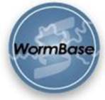

 The C. briggsae draft genome (Stein et.al, PloS Biology, 2003) has been fully incorporated into WormBase. The C. briggsae genome can be viewed by itself or in synteny with the C. elegans genome. The genome browser displays alignments to the C. briggsae genome if the 'briggsae alignments' track is enabled; from an alignment one can hop to the relevant segment of the C. briggsae genome. Orthologies between C. briggsae and C. elegans and 'two-species sequence alignments' can be obtained using the Synteny Viewer under the 'Sequence Search' section of the web-site.
The gene page has a hyperlink to any putative C. briggsae ortholog which leads to a syntenic view of the two genes. BLASTP hits against the C. briggase genome are also available on the gene page which in turn lead to a C. briggsae protein page. Thus, most C. elegans sequence functions will work for C. briggsae sequences.
WormBase has completed the transition to new models for microarray data allowing the incorporation of much larger volumes of data. The WS119 database release contains 1,579,726 microarray data points from 13 papers that describe 105 independent experiments, compared to 272,770 data points from two papers and 15 experiments in WS109. We expect all published microarray data to be incorporated into WormBase by the end of February. A new 'Microarray Results' web display has been developed and is now linked to the 'Function' section of the Gene page. It can also be accessed directly at: http://www.wormbase.org/db/microarray/results. Tools like 'Microarray Search' and 'Microarray Batch download', that will allow users to retrieve specific information and download data for a list of genes are also being developed.
WormBase has also developed models for Serial Analysis of Gene Expression (SAGE) data and will be incorporating experimental data starting from the WS120 release.
Last month Wormbase launched a new literature search engine powered by Textpresso (http://www.textpresso.org). This can be accessed via the home page when the 'Literature Search' box is checked, allowing direct searches of abstracts and the full text of nearly 3,000 journal articles pertaining to C. elegans biology. In addition to a traditional keyword search, users can now create powerful searches with "word categories" picked from the drop down menus on the literature search page. Word categories are words grouped according to their biological meaning, such as the word category, "Regulation" which contains the words "enhance", "repress", "upregulation" etc. Documentation on using word categories to search text can be found here:
http://www.textpresso.org/doc/examples/ex-con.html
The WS118 release of WormBase contains 456 antibody objects, they target 401 genes (390 confirmed genes and 11 predicted genes). These 456 antibodies cover ~70% of the antibodies published in the C. elegans literature. Antibodies are listed on the gene page in the 'Reagents' section.
849 Mos-derived transposon insertions generated in the laboratory of Laurent Segalat are now available on the Genome Browser and on individual Allele pages.
The sequencing of three additional genomes of the Caenorhabditis species (CB5161, C. remanei and C. japonica) has been approved by the National Genome Research Institute. The Washington University Genome Sequencing Center will carry out the sequencing.
The Genome Browser now exports images in the Scalable Vector Graphics (SVG) format. Since these images can be resized with no loss in resolution, they are ideal for generating publication quality figures. Furthermore, these images can be edited element-by-element in vector-based graphics programs such as Adobe Illustrator. To generate SVG output, first navigate to a region of the genome of interest in the Genome Browser, then click on the "Publication Quality Image" link. You will need the SVG Plug-in available from Adobe or an SVG-capable browser in order to view SVG within your browser. Alternatively, you may download the image and open it in a program such as Adobe Illustrator.
(http://www.wormbase.org/db/misc/person_name)
The 'Person' display has now been enhanced to display all publications for a given author. These are divided into two categories - those confirmed by authors, as well as papers attributed to authors but not yet confirmed. To confirm your publications, please contact Cecilia Nakamura (cecilia@minerva.caltech.edu).
While WormBase has always contained allele data, we have only recently started to record detailed allele data, i.e. nature of the mutation, exact location of the allele (with reference to the genome sequence). So far we have been extracting this information from the published literature while the Knockout Consortium has provided us details of knockout alleles. This has given us about 1,000 alleles for which we can describe the mutation and the position of the allele. It would greatly help us if you could submit any allele data you have. Allele information can be submitted using this simple web form:
http://minerva.caltech.edu/~azurebrd/cgi-bin/forms/allele.cgi. All submissions will be acknowledged in our database.
Lincoln Stein nominated 'Most Innovative in Bioinformatics'
Lincoln Stein, co-PI of WormBase, was named 'Most Innovative in Bioinformatics' in Genome Technology. The journal's honors are based upon nominations from Genome Technology readers, which include more than 20,000 professionals.
New web-team member at Cold Spring Harbor Laboratory
Payan Canaran, formerly at the Bioinformatics department of Merck in New Jersey, has joined the web team.